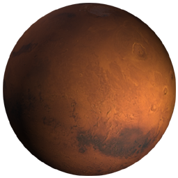

|

` Сонце

Меркурій

Венера

Земля

Місяць

Марс

Юпітер

Сатурн

Уран

Нептун

Плутон
|
Марс
 Марс був богом війни у стародавніх римлян. Відстань його від Сонця — 227,7 млн. кілометрів.
Марс був богом війни у стародавніх римлян. Відстань його від Сонця — 227,7 млн. кілометрів.
Довгий час вважалося, що на цій планеті найбільш вірогідне існування життя. Із середини 60-х років до 80-х космічні зонди «Марінер» (США), серія «Марс» (СРСР), «Вікінг 1 і 2» (США) і «Фобос» (СРСР) досліджували Марс. Зонди не виявили ніяких доказів життя, але ж усе-таки стало очевидно, що Марс чимось схожий на Землю. Наприклад, атмосфера Марса в основному складається з діоксиду вуглецю (як на Венері), але є трохи і кисню й азоту (як на Землі). В атмосфері Марса присутня вода, але у порівнянні із Землею це лиш 0,001%. Проте цього досить, щоб конденсувати і формувати хмари і туман.

Дні на Марсі майже такої ж довготи, як і на Землі — 24 години 37 хвилин. Але оскільки Марс далі від Сонця, йому потрібно для проходження про своїй орбіті вдвічі більше часу, ніж на Землі, — 687 земних днів. Вісь Марса нахилена майже під тим же кутом, що й у Землі, звідси і пори року, щоправда, літня температура досягає лише —21 °С, а зимова опускається до —124 °С, заморожуючи, діоксид вуглецю у полярних районах Марса до льоду.
Поверхня Марса здається порізаною колись в далекому минулому стрімкими потоками. Багато шо нагадує долини, берегові лінії, русла річок і острови. Один з каньйонів Марса такий довгий, що міг би перетнути в довжину територію США.

На Марсі один з найбільших вулканів Сонячної системи — вулкан Олімп. Його ширина біля основи понад 700 км і більш як 23 км висота. На Землі він був би вдвічі більшим від Евереста. Червона поверхня Марса — це результат залізооксидного пилу, який вкриває більшу частину планети. Ядро Марса менше земного, але більше місячного і складається із заліза і нікелю.
Сила гравітації Марса складає 2/5 гравітації Землі.
Марс вдвічі менший за Землю і має два супутники. Це невеликі астероїди, спіймані притяганням Марса. Вони називаються Фобос і Деймос.
|